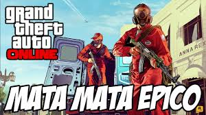

Serviços do GTA 5
Ultimas Equipes Sobreviventes

No GTA Online, o modo "Última Equipe Sobrevivente" (Last Team Standing) é um dos modos de
jogo mais populares e competitivos. Ele coloca equipes umas contra as outras em partidas
de eliminação, onde o objetivo principal é ser a última equipe sobrevivente. Esse modo é
estratégico, exige coordenação e planejamento entre os membros da equipe, e tem várias
variações que podem incluir diferentes armas, veículos e ambientes.
Como funciona:
Equipes: Geralmente duas ou mais equipes competem, e cada uma tem um número definido de jogadores.
Objetivo: O objetivo principal é eliminar todos os membros das outras equipes. A equipe que eliminar todas as outras é declarada vencedora.
Sem reaparição: Quando um jogador é eliminado, ele não pode reaparecer até o fim da rodada, o que aumenta a importância de táticas e precaução.
Rodadas: As partidas são jogadas em rodadas, e a equipe que ganhar mais rodadas vence a partida.
Armas e veículos: O tipo de armamento e os veículos disponíveis variam de acordo com o mapa. Algumas partidas oferecem acesso a armas pesadas, enquanto outras focam em combate corpo a corpo ou com armas leves. Veículos como carros, helicópteros e tanques também podem ser utilizados em certas variações.
Estratégias Comuns:
Trabalho em equipe: A comunicação e a coordenação são essenciais. Jogar como uma equipe, proteger os membros mais vulneráveis e focar em táticas de flanqueamento podem fazer a diferença.
Uso do ambiente: Mapas variados, com diferentes coberturas e locais para se esconder, permitem estratégias defensivas ou ofensivas. Jogadores podem se posicionar em pontos elevados ou usar barreiras para proteção.
Veículos e armamento: Saber usar os recursos disponíveis no mapa, como veículos e armas de longo alcance, pode desequilibrar a partida a favor da sua equipe.
Criação de Mapas Personalizados:
Os jogadores também podem criar e compartilhar suas próprias versões de Última Equipe Sobrevivente no modo Criador (Creator Mode) de GTA Online. Isso permite que a comunidade crie suas próprias regras, ambientes e desafios, mantendo o modo sempre variado e interessante.
Variações:
Armas pesadas vs. armas leves: Algumas versões desse modo podem variar de acordo com o tipo de armamento disponível.
Veículos: Algumas partidas focam em veículos, como helicópteros ou tanques, enquanto outras são em áreas mais restritas onde os veículos não são permitidos.
Esse modo de jogo traz a adrenalina de ser o último sobrevivente, especialmente quando você chega ao final de uma rodada e o combate se torna mais intenso entre os membros restantes de cada equipe.
Como funciona:
Equipes: Geralmente duas ou mais equipes competem, e cada uma tem um número definido de jogadores.
Objetivo: O objetivo principal é eliminar todos os membros das outras equipes. A equipe que eliminar todas as outras é declarada vencedora.
Sem reaparição: Quando um jogador é eliminado, ele não pode reaparecer até o fim da rodada, o que aumenta a importância de táticas e precaução.
Rodadas: As partidas são jogadas em rodadas, e a equipe que ganhar mais rodadas vence a partida.
Armas e veículos: O tipo de armamento e os veículos disponíveis variam de acordo com o mapa. Algumas partidas oferecem acesso a armas pesadas, enquanto outras focam em combate corpo a corpo ou com armas leves. Veículos como carros, helicópteros e tanques também podem ser utilizados em certas variações.
Estratégias Comuns:
Trabalho em equipe: A comunicação e a coordenação são essenciais. Jogar como uma equipe, proteger os membros mais vulneráveis e focar em táticas de flanqueamento podem fazer a diferença.
Uso do ambiente: Mapas variados, com diferentes coberturas e locais para se esconder, permitem estratégias defensivas ou ofensivas. Jogadores podem se posicionar em pontos elevados ou usar barreiras para proteção.
Veículos e armamento: Saber usar os recursos disponíveis no mapa, como veículos e armas de longo alcance, pode desequilibrar a partida a favor da sua equipe.
Criação de Mapas Personalizados:
Os jogadores também podem criar e compartilhar suas próprias versões de Última Equipe Sobrevivente no modo Criador (Creator Mode) de GTA Online. Isso permite que a comunidade crie suas próprias regras, ambientes e desafios, mantendo o modo sempre variado e interessante.
Variações:
Armas pesadas vs. armas leves: Algumas versões desse modo podem variar de acordo com o tipo de armamento disponível.
Veículos: Algumas partidas focam em veículos, como helicópteros ou tanques, enquanto outras são em áreas mais restritas onde os veículos não são permitidos.
Esse modo de jogo traz a adrenalina de ser o último sobrevivente, especialmente quando você chega ao final de uma rodada e o combate se torna mais intenso entre os membros restantes de cada equipe.
Mata-Mata

Os mata-matas retornam no GTA Online, o multiplayer de Grand Theft Auto V,
com três tipos diferentes de partidas disponíveis, Normal (Todo mundo Contra),
em Equipes e em veículos, embora qualquer mapa do mata-mata possa ser jogado como
uma modalidade padrão ou como uma equipe, apesar da Rockstar rotulá-los diferentemente
no menu e no modo livre. Até 16 jogadores podem jogar em um Mata-mata. Eles podem
ser criados usando o modo criador.
Os serviços são acessados a partir do modo livre, seja entrando na roda ou selecionando-os no menu de pausa, onde eles podem ser ativados no mapa ou na lista de trabalhos online ou nos menus de votação pós-serviço.
Os serviços são acessados a partir do modo livre, seja entrando na roda ou selecionando-os no menu de pausa, onde eles podem ser ativados no mapa ou na lista de trabalhos online ou nos menus de votação pós-serviço.
Corridas

As corridas terrestres são divididas em três tipos diferentes: padrão (volta e ponto a ponto), GTA (volta e ponto a ponto) e rally.
Volta Padrão e Ponto a Ponto envolve jogadores dirigindo através de vários pontos de verificação na pista antes de chegar ao final. As corridas de volta padrão envolvem voltas cronometradas repetidas em torno de um percurso definido e as corridas ponto a ponto vão de um ponto inicial a um ponto final em outro local. As corridas GTA são essencialmente as mesmas que as corridas padrão / ponto a ponto, mas com armas e power-ups ativados. Os jogadores também podem sair do veículo inicial e roubar um veículo diferente. O Rally é um formato exclusivo baseado em equipe, no qual existem dois jogadores em cada veículo, o motorista e o navegador. O piloto não consegue ver os pontos de verificação na corrida; portanto, o navegador deve direcionar o piloto pelos pontos com comandos direcionais ou comandos de voz usando o microfone.
Havia 42 corridas exclusivas criadas pela Rockstar no início do GTA Online . A Rockstar Games continua a lançar atualizações que incluem novas corridas. Há uma quantidade praticamente infinita de corridas feitas por jogadores que às vezes podem até ser oficialmente aprovadas pela Rockstar Games; estas são conhecidas como corridas vefiricadas pela Rockstar.
Uma opção de corrida-fantasma foi adicionada na atualização da Ostentação , que permite aos jogadores disputar corridas padrão com colisões desabilitadas entre os veículos dos jogadores (outros jogadores aparecem como "fantasmas" semitransparentes), mas os jogadores ainda podem colidir com tráfego de NPCs, estruturas e outros cenários. O vácuo é automaticamente desativado em corridas-fantasma.
Volta Padrão e Ponto a Ponto envolve jogadores dirigindo através de vários pontos de verificação na pista antes de chegar ao final. As corridas de volta padrão envolvem voltas cronometradas repetidas em torno de um percurso definido e as corridas ponto a ponto vão de um ponto inicial a um ponto final em outro local. As corridas GTA são essencialmente as mesmas que as corridas padrão / ponto a ponto, mas com armas e power-ups ativados. Os jogadores também podem sair do veículo inicial e roubar um veículo diferente. O Rally é um formato exclusivo baseado em equipe, no qual existem dois jogadores em cada veículo, o motorista e o navegador. O piloto não consegue ver os pontos de verificação na corrida; portanto, o navegador deve direcionar o piloto pelos pontos com comandos direcionais ou comandos de voz usando o microfone.
Havia 42 corridas exclusivas criadas pela Rockstar no início do GTA Online . A Rockstar Games continua a lançar atualizações que incluem novas corridas. Há uma quantidade praticamente infinita de corridas feitas por jogadores que às vezes podem até ser oficialmente aprovadas pela Rockstar Games; estas são conhecidas como corridas vefiricadas pela Rockstar.
Uma opção de corrida-fantasma foi adicionada na atualização da Ostentação , que permite aos jogadores disputar corridas padrão com colisões desabilitadas entre os veículos dos jogadores (outros jogadores aparecem como "fantasmas" semitransparentes), mas os jogadores ainda podem colidir com tráfego de NPCs, estruturas e outros cenários. O vácuo é automaticamente desativado em corridas-fantasma.
Serviços de Golpes
Os jogadores devem estar no nível 12 ou superior para armar um golpe e devem possuir
um apartamento de alto nível com uma sala de planejamento de golpe. Assim que o jogador
atingir o nível necessário e comprar um apartamento apropriado, o Lester Crest entrará
em contato com o jogador por mensagem de texto e fará uma ligação para apresentar o
conceito de assalto. O jogador deve então se encontrar com Lester em sua fábrica de
roupas. Isso iniciará o tutorial para o golpe "O Serviço da Fleeca". Para o propósito
do tutorial, Lester cobre o custo inicial em dinheiro e atua como líder do golpe.
Depois de completar com sucesso o primeiro golpe, Lester apresentará um novo personagem que entrará em contato com o jogador diretamente quando um novo golpe estiver disponível. Depois disso, o jogador tem a opção de planejá-lo, tornando-se um líder do golpe. Cada golpe deve ser desbloqueado em ordem e requer uma quantidade crescente de dinheiro inicial para ser planejado. Uma parte desse dinheiro inicial vai para o pagamento de membros da equipe por participarem das missões de planejamento, embora o líder não receba nada desse dinheiro e possa lucrar apenas ao completar com sucesso a missão principal do golpe. O líder deve ter a equipe necessária para realizar as missões, normalmente consistindo de 4 jogadores (com exceção do Serviço do Fleeca, que requer uma equipe de apenas 2 jogadores e também O Golpe do Juízo Final, onde a maioria das missões pode ser concluída com 2-4 jogadores), e o líder do golpe não será capaz de lançar essas missões com menos do que o número de jogadores necessários. Da mesma forma, o planejamento/final do golpe falhará um dos jogadores sair.
] Algumas missões têm todos os jogadores envolvidos trabalhando juntos como uma unidade, algumas exigem que os jogadores assumam tarefas específicas como hackeamento ou controle de multidão, enquanto outras exigem que os jogadores se dividam em equipes menores para completar objetivos separados simultaneamente. Existem seis golpes no GTA Online, cada um com sua própria série de missões de planejamento. Ao contrário das missões de contato regulares, os pagamentos dos golpes (ambas as missões de planejamento e os próprios golpes) são pagos diretamente na conta bancária do jogador, não em sua carteira diretamente.
Depois de completar com sucesso o primeiro golpe, Lester apresentará um novo personagem que entrará em contato com o jogador diretamente quando um novo golpe estiver disponível. Depois disso, o jogador tem a opção de planejá-lo, tornando-se um líder do golpe. Cada golpe deve ser desbloqueado em ordem e requer uma quantidade crescente de dinheiro inicial para ser planejado. Uma parte desse dinheiro inicial vai para o pagamento de membros da equipe por participarem das missões de planejamento, embora o líder não receba nada desse dinheiro e possa lucrar apenas ao completar com sucesso a missão principal do golpe. O líder deve ter a equipe necessária para realizar as missões, normalmente consistindo de 4 jogadores (com exceção do Serviço do Fleeca, que requer uma equipe de apenas 2 jogadores e também O Golpe do Juízo Final, onde a maioria das missões pode ser concluída com 2-4 jogadores), e o líder do golpe não será capaz de lançar essas missões com menos do que o número de jogadores necessários. Da mesma forma, o planejamento/final do golpe falhará um dos jogadores sair.
] Algumas missões têm todos os jogadores envolvidos trabalhando juntos como uma unidade, algumas exigem que os jogadores assumam tarefas específicas como hackeamento ou controle de multidão, enquanto outras exigem que os jogadores se dividam em equipes menores para completar objetivos separados simultaneamente. Existem seis golpes no GTA Online, cada um com sua própria série de missões de planejamento. Ao contrário das missões de contato regulares, os pagamentos dos golpes (ambas as missões de planejamento e os próprios golpes) são pagos diretamente na conta bancária do jogador, não em sua carteira diretamente.